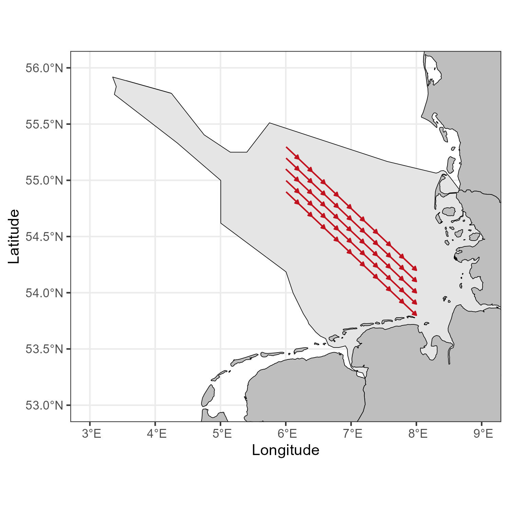

library(SeaDens) #updatedusing arrows
R
ggplot2
English
Y2023
surveys
This post is on how to use arrows in a plot.
This post is to create a plot that has arrows indicating the direction
In the example, we use sample data, but if you know where you event starts and ends you can skip these steps and go directly to the final section.
Data
Load data from package SeaDens
This data is from a simulated survey.
survey_data<-survey_4326Calculate gaps
Using the information from time, we will check when there were gaps and based on where a gap was, identify different events
Load tidyverse package to use some functions
library(tidyverse)Check that your time data is in the correct format
survey_data$dt <- as.POSIXct(strptime(survey_data$timestamps, "%Y-%m-%d %H:%M:%S"))This function uses the times to identify where there was a gap, assuming that the data is sorted
calculate_gaps<-function(my_data=my_data){
time1<-my_data$dt
time2<-lag(time1)
time_dif<-as.numeric(difftime(time1,time2, units="mins"))
my_data$time_dif<-as.numeric(time_dif)
return(my_data)
}After running the function, a new data frame will be created which includes a column named time_dif
survey_data_gaps<-calculate_gaps(survey_data)Here we will define, how many minutes should be considered a gap
survey_data_gaps<-survey_data_gaps %>%
mutate(gap_event = case_when(is.na(time_dif) ~ 'N',
time_dif >= 2 ~ 'Y',
TRUE ~ 'N'))Identify events
To add a number to each event in order to be able to identify them separately, we use the following function
identify_events<-function(my_data=my_data){
num_seq<-nrow(my_data)
num_seq<-as.numeric(num_seq)
my_data$num_seq<-as.numeric(paste(seq(1:num_seq)))
subset_data<-subset(my_data,my_data$gap_event != "Y")
subset_data$num_seq<-as.integer(subset_data$num_seq)
subset_data$event_number<-(cumsum(c(1L, diff(subset_data$num_seq)) != 1L))
subset_data$event_number<-subset_data$event_number+1
subset_data$event_number<-stringr::str_pad(subset_data$event_number, 3, pad = "0")
subset_data$event_number<-paste0("event_",subset_data$event_number)
subset_data<-subset_data%>%select(num_seq,event_number)
my_data_events<-full_join(my_data,subset_data,by='num_seq')
return(my_data_events)
}The function will return a data frame with a new column called event_number
survey_data_events<-identify_events(my_data=survey_data_gaps)Start and time of the events
Using the classification of the events, we will extract the first and the last location per event, which would become the start and end of the arrow on the plot
survey_time_events<-survey_data_events %>%
group_by(event_number)%>%
summarise(first_lat=first(latitude),
last_lat=last(latitude),
first_lon=first(longitude),
last_lon=last(longitude))%>%
drop_na()Plot
To plot we use the function geom_segment and the additional argument arrow
ggplot(survey_time_events,
aes(x = first_lon, y = first_lat)) +
geom_segment(aes(xend = last_lon, yend = last_lat), arrow = arrow())Re-scale
If you were need more frequent arrows, you can re-scale the events
Here I create a for loop to re-scale separately per event
rescale_events<-function(my_data=my_data,each_num=each_num){
events_list<-split(my_data,my_data$event_number)
new_events_list<-list()
for( i in seq_along(events_list)){
events_df<-events_list[[i]]
rep_secuence<-rep(1:100, each=each_num)
replicate_numbers<-rep_secuence[1:nrow(events_df)]
events_df$rep_number<-replicate_numbers
events_df$event_number2<-paste0(events_df$event_number,'-',events_df$rep_number)
new_events_list[[i]]<-events_df
}
new_events_df<- do.call("rbind",new_events_list)
return(new_events_df)
}We define how often do we want the arrow to occur, here I selected 40, which represents the number of locations
survey_rescale<-rescale_events(my_data=survey_data_events,each_num=40)Group by event
Use the function group_by and summarise to identify the start and end of the events, now with the rescaling there would be more events
survey_rescale_arrows<-survey_rescale %>%
group_by(event_number2)%>%
summarise(first_lat=first(latitude),
last_lat=last(latitude),
first_lon=first(longitude),
last_lon=last(longitude))%>%
drop_na()Similarly to above we use the function geom_segment and the argument arrow
ggplot(survey_rescale_arrows,
aes(x = first_lon, y = first_lat)) +
geom_segment(aes(xend = last_lon, yend = last_lat),
arrow = arrow())In a map
Finally, to see how it would look in a map we will include a base map from Germany.
Load the shapefiles and the package to plot
library(GermanNorthSea)
library(sf)Transform to the corresponding CRS
German_land<-st_transform(GermanNorthSea::German_land, 4326)
German_EEZ<-st_transform(GermanNorthSea::German_EEZ, 4326)
German_coast<-st_transform(GermanNorthSea::German_coast, 4326)Add the corresponding arguments and voilà
ggplot() +
geom_sf(data = German_EEZ, colour = 'black')+
geom_sf(data = German_land, colour = 'black', fill = 'grey')+
coord_sf(xlim = c(3, 9),ylim = c(53, 56))+
theme_bw()+
xlab('Longitude')+ylab('Latitude')+
geom_segment(data=survey_rescale_arrows,aes(x = first_lon, y = first_lat,xend = last_lon, yend = last_lat),
arrow = arrow(length=unit(0.10,"cm"), type = "closed"),
color='#c1121f')
Further reading
To change the shape, size and form of the arrow visit geom_segment